X2 Media Day/X2 Media Day REDO
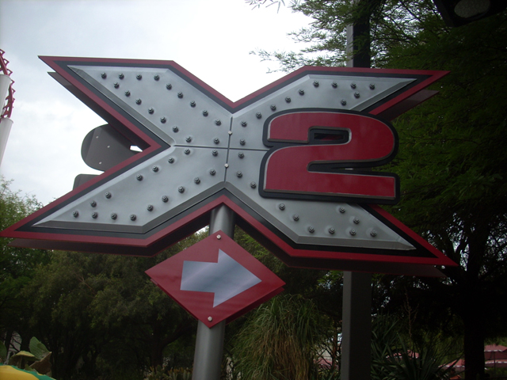
Today was the X2 Opening Day. Alot of stuff happened today. Unfortunetly, most of that was negative.
 If you get bored, you can photograph Viper while you wait for X2.
If you get bored, you can photograph Viper while you wait for X2.
 "HA! HA!!! YOU HAVE TO WAIT HOURS AND HOURS TO GET ON X2 WHILE I ONLY WAITED 20 MINUTES!!!!"
"HA! HA!!! YOU HAVE TO WAIT HOURS AND HOURS TO GET ON X2 WHILE I ONLY WAITED 20 MINUTES!!!!"
 X2 still has it's sick first drop.
X2 still has it's sick first drop.
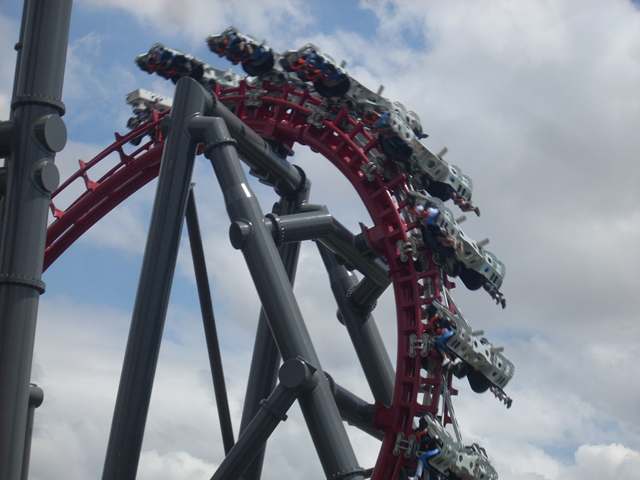
The Raven Turn of death!!!!!
 More Sick Awsome Goodness!!!
More Sick Awsome Goodness!!!
 These riders are amazed right now. Not because they're about to go through the raven turn of death, but because of...
These riders are amazed right now. Not because they're about to go through the raven turn of death, but because of...
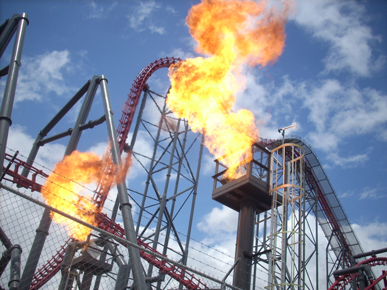
FIRE!!!!!!! LOTS AND LOTS OF FIRE!!!!!!!!
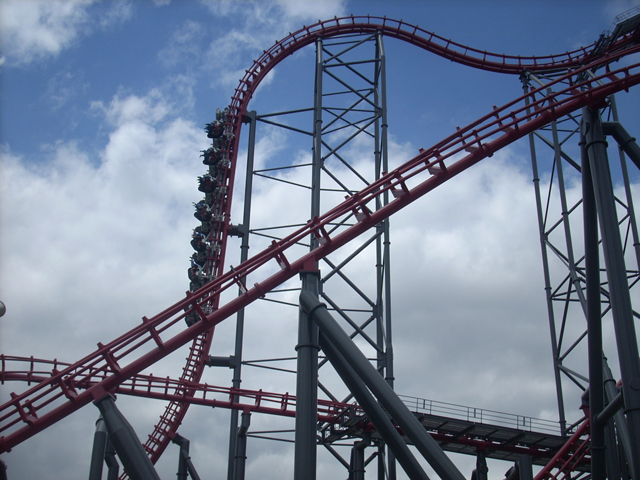
This is much better than Millenium Force's first drop.
 Not the Raven Turn of death!!!
Not the Raven Turn of death!!!
 You better prepare for the crazy fire coming up.
You better prepare for the crazy fire coming up.
Some random X track.
 "GOING DOWN!!!!"
"GOING DOWN!!!!"
 Warning. You may get first degree burns on this ride.
Warning. You may get first degree burns on this ride.
 That's enough X2 for today. Let's ride Tatsu.
That's enough X2 for today. Let's ride Tatsu.
These people are sad and misreble because they can't photograph Viper in Tatsu's line, nor can they see a giant plasma screen that shows the ride logo.
 Up next was DejaVu. However, a terrible thing happened while riding DejaVu.. While riding DejaVu.
Up next was DejaVu. However, a terrible thing happened while riding DejaVu.. While riding DejaVu.
 I lost my f**king cell phone on DejaVu. Then I spent the rest of the day looking for it. I ended up having to go back to SFMM two weeks later to make up for the god awful day that was X2 Media Day. (And no, I did not get my phone back.)
I lost my f**king cell phone on DejaVu. Then I spent the rest of the day looking for it. I ended up having to go back to SFMM two weeks later to make up for the god awful day that was X2 Media Day. (And no, I did not get my phone back.)
 Unfortunetly, On the X2 Media Day REDO, X2's line was very long and I couldn't ride it due to the limited time I had.
Unfortunetly, On the X2 Media Day REDO, X2's line was very long and I couldn't ride it due to the limited time I had.
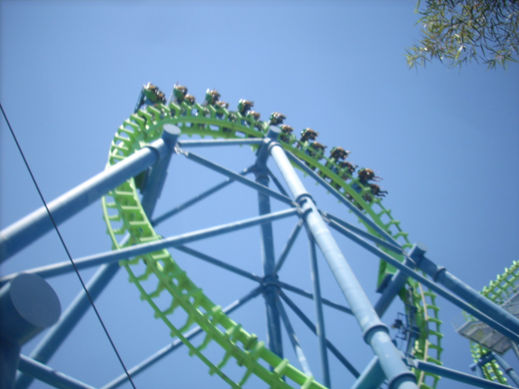
Well since X2's line is too long to wait for, why not head on over to my cell phones grave and ride the ride that killed it.
WOAH!!! NOT COOL!!!!!! I"M ASHAMED OF YOU SIX FLAGS!!! SINGLE RIDER LINES SHOULD BE OPEN AS LONG AS THE RIDE IS OPEN!!!! Well, I guess I can forgive you since you gave us Awsome Backstage Tours, Free Doughnuts, and Night ERT. But you've got to work on that.
Since DejaVu is being a cell phone murdering single rider hating bitch, I decided to leave and go ride a coaster with a gum lifthill.
 FAKE HELIX OF DEATH!!!!!!!!!!
FAKE HELIX OF DEATH!!!!!!!!!!
 Before I continue on with the update, I just want to say Thank You to the Riddlers Revenge crew for ACTUALLY KEEPING THEIR SINGLE RIDERS LINE OPEN!!!!!! Congratulations, you did the right thing. Give yourselves some cookies.
Before I continue on with the update, I just want to say Thank You to the Riddlers Revenge crew for ACTUALLY KEEPING THEIR SINGLE RIDERS LINE OPEN!!!!!! Congratulations, you did the right thing. Give yourselves some cookies.
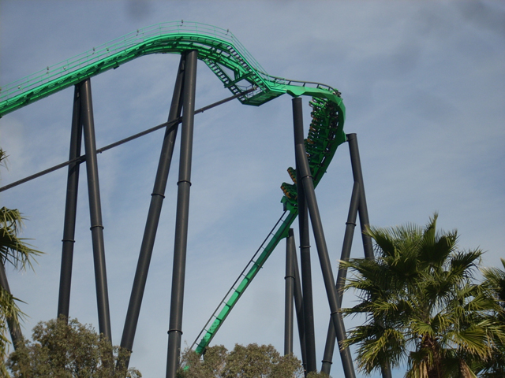
Riddlers nice first drop.
 Yay!!! Fake Airtime!!!!
Yay!!! Fake Airtime!!!!
 It's Batman Time! (Theme Music Plays.)
It's Batman Time! (Theme Music Plays.)
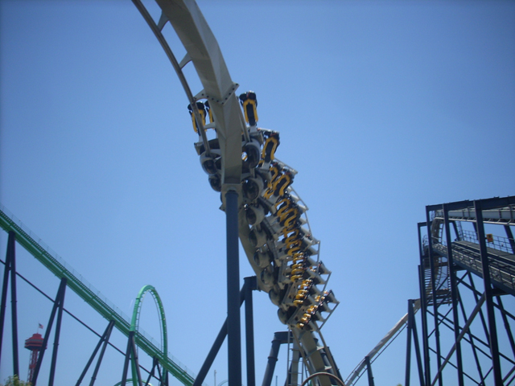
Is this ride better in Canada? Tune in this summer and find out!
Well, it looks like someone has beaten Cody at trips to SFMM. Cody may go every two weeks, but this lucky bird actually LIVES in Batman. Accept your new enemy Cody.
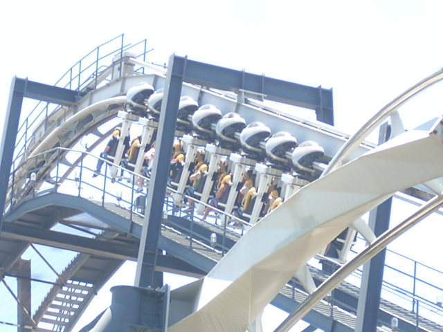
Batman got stuck!!!
Today is a beautiful day to climb up a lift hill.
 Up next was Scream!
Up next was Scream!
 Scream was fun. Although the crew was not very good as they were double stacking today.
Scream was fun. Although the crew was not very good as they were double stacking today.
 Collosus was running great today.
Collosus was running great today.
 Goliath from Collosus. Oh yeah, that was the next ride. (But I'm sure you could've figured that out on your own.)
Goliath from Collosus. Oh yeah, that was the next ride. (But I'm sure you could've figured that out on your own.)
Here's a shot of Superman from Goliath's Fastpass Line.
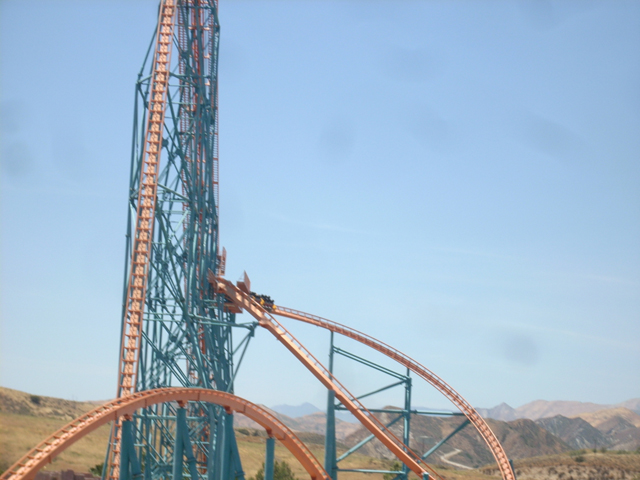
I got airtime on Goliaths first drop today!!!
 Oh yeah, Thomas Town opened this weekend!
Oh yeah, Thomas Town opened this weekend!
The entrance looks nice.
Percy also looked good and fit into Thomas Town very well.
HA! HA! I got the credit 7 years ago!!!
While I didn't go on the Train Ride today, I'll be sure to ride it someday.
Grr! I'm a person!!! Exept I'm made of plastic and have no internal organs!!! So technically, I'm not a person, But I'm made of atoms, So I'm something!!!!
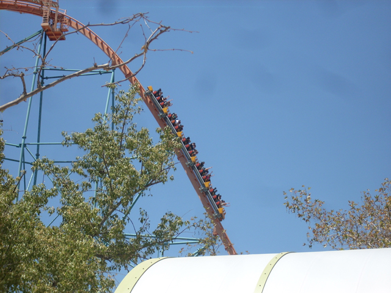
Goliath from Thomas Town
Why there are there giant pinatas at Magic Mountain?
Oh. That's why.
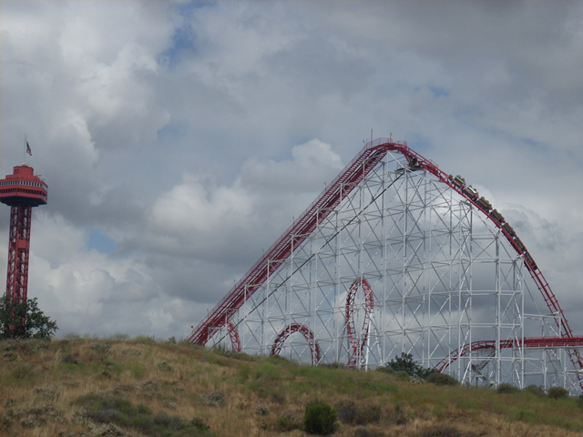
Since X2's line was still out the door, I decided to ride Viper.
 It was actually pretty smooth today.
It was actually pretty smooth today.
 And how else do you end a day at SFMM other than riding Tatsu!
And how else do you end a day at SFMM other than riding Tatsu!
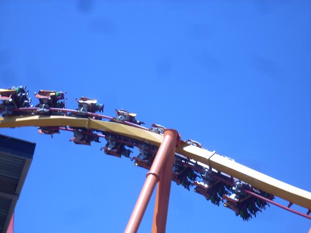
Well, this day was great and totally made up for the awful day two weeks ago. And as for the cell phone, I'll just buy another one. Enjoy this Final Tatsu Shot.
Home